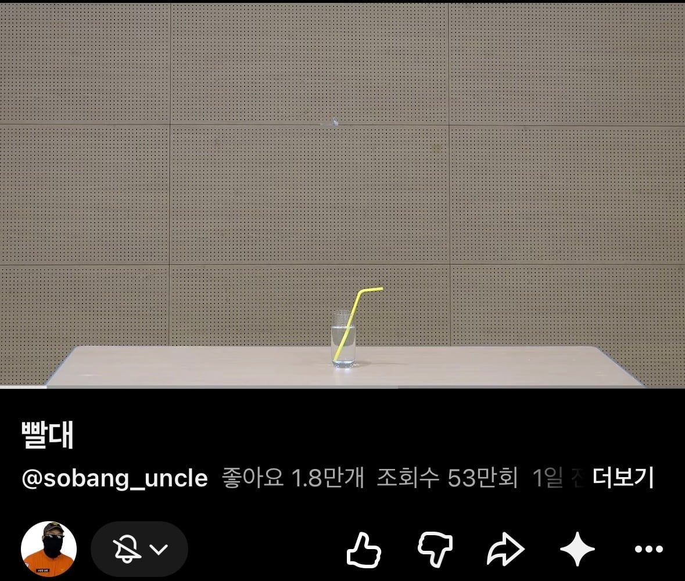
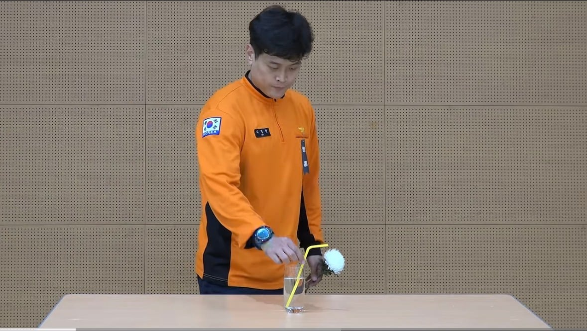
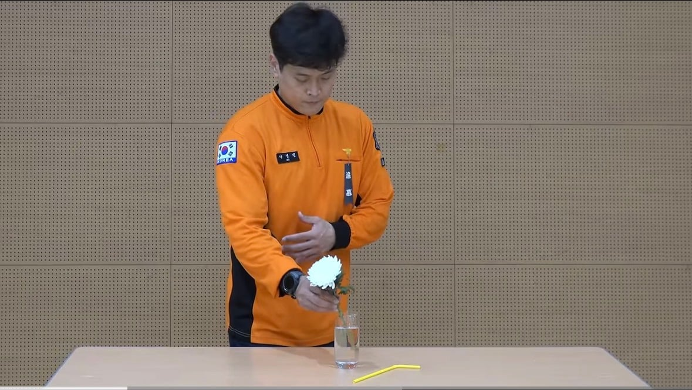
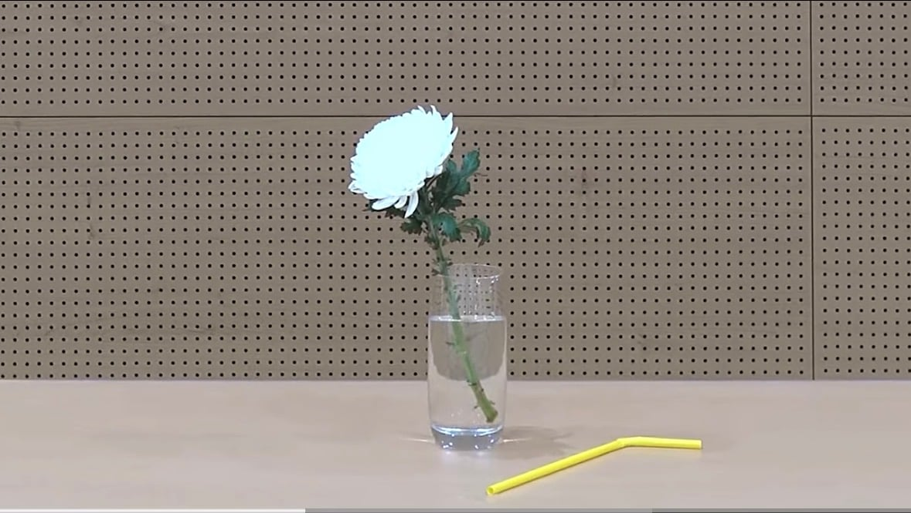
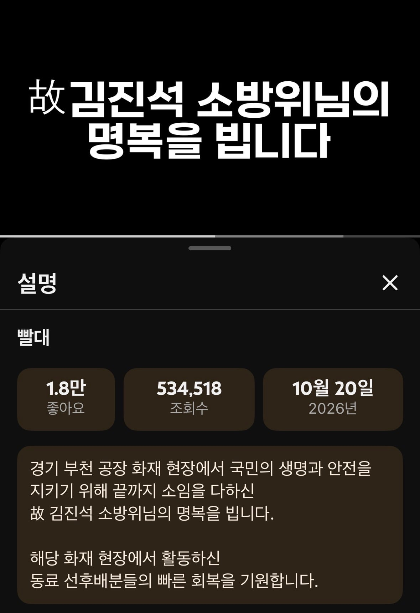

같은 제복 입고 같은 일을 하다가
먼저 가신 임들이시여
우리는 임들의 희생을 딛고서
사랑과 명예를 얻었네
어찌해야 이 빚을 갚을 수 있나
갚을 수 없네 갚을 길 없네
그 사랑 그 명예 지키기 위해
땀을 흘리리 마음 다지리





같은 제복 입고 같은 일을 하다가
먼저 가신 임들이시여
우리는 임들의 희생을 딛고서
사랑과 명예를 얻었네
어찌해야 이 빚을 갚을 수 있나
갚을 수 없네 갚을 길 없네
그 사랑 그 명예 지키기 위해
땀을 흘리리 마음 다지리
하루 한시간은 뉴스보는게 나쁜건아님. 세상 어떻게 돌아가는지 알고 은근히 재미잇고 일요일에 세계는 지금도 잼고. 어차피 그년이 지랄하는게 한두번이 아니라서 이번기회에 날아가면 좋겟는데 바뀌는게 없는게 한국사회지.
ㅋㅋㅋㅋㅋ 댓글창 어지럽네 정사판인줄
삼가 고인의 명복을 빕니다.
애미추~
아 부추 먹고 싶네 씨벌부추!
이거 근데 ㅇㄱㄸ 유도 아닌가;;
징계 안건은 올라가겠네
상폐한 병신년은 걍 죽었으면